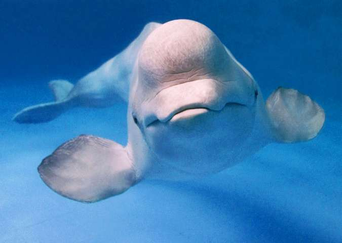

The beluga and bats are know animals to posess ecolocation
Beluga whales are found mostly in the arctique and is apart of the same family as the Narwal
Beluga's can be found seen in zoos and aquatic shows like marine land etc..
Beluga's are the smallest species of whale
